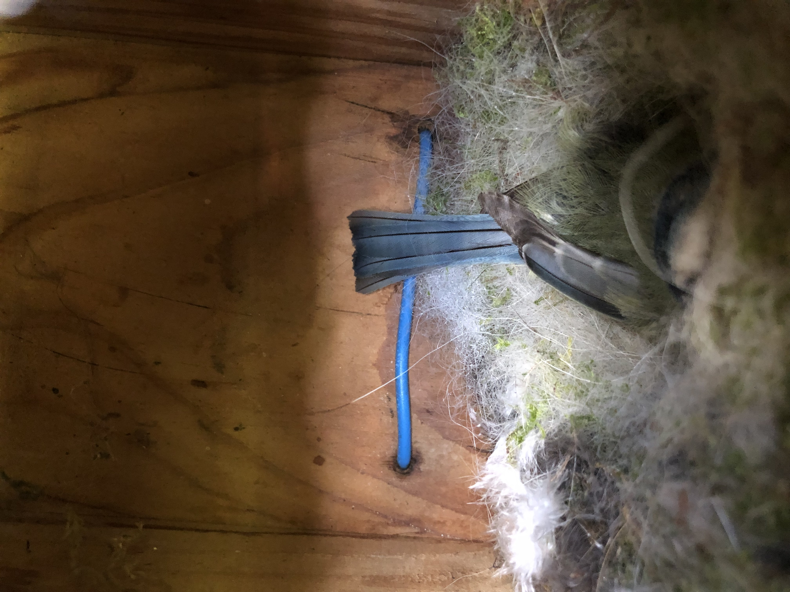

Acueil
Acueil
Informations sur la Mésange charbonnière
La Mésange charbonnière (Parus major) est une espèce de passereaux de la famille des paridés.
C'est la mésange, la plus commune et la plus grande des mésanges eurasiatiques, est facilement identifiable grâce à sa calotte et à sa cravate noires, ainsi qu'à son plumage où le jaune domine. Le dimorphisme sexuel est peu marqué.
Présente dans la quasi-totalité de l'Europe, une grande partie de l'Asie et le nord-ouest de l'Afrique, elle occupe de nombreux types d'habitats, qu'il s'agisse de forêts, de taïgas, de parcs ou de jardins, pourvu qu'il y ait des arbres. Elle établit son nid dans une cavité d'arbre ou de muraille, mais occupe également les nichoirs. Si l'espèce est généralement sédentaire et fidèle à son territoire d'année en année, des migrations partielles ont lieu certaines années, probablement en raison de la surpopulation. Grégaire, elle vit en petits groupes en dehors de la période de reproduction.
Elle a un régime alimentaire varié. Si elle est majoritairement insectivore pendant la période de reproduction, elle est plutôt granivore le reste de l'année. C'est ainsi qu'elle fréquente assidûment les mangeoires, où elle recherche des graines, essentiellement de tournesol : quand elle en trouve une, elle se pose sur une branche proche pour la déguster, puis revient. La Mésange charbonnière ainsi que ses petits font à leur tour partie du régime alimentaire de certains oiseaux (Épervier d'Europe et Pic épeiche notamment) et mammifères (Belette d'Europe et Chat domestique notamment).
Plus d'information sur Wikipédia